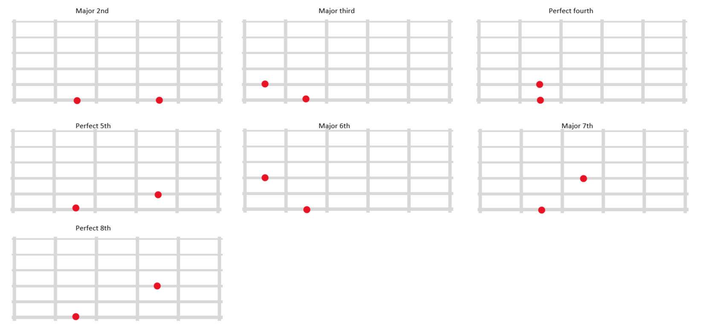

note this page is meant to be practiced 5 min a day if you do more you wont learn as much.You donot need to know music theory at all, all you need to know is the concept of an interval in music. An interval is the distance between two notes
this is how an interval sound [add interval sound]
you have to use nemotecnia to memorize the intervals.In this case we have a chart with songs that use the intervals.for example in the song happy birthday the interval of major second is present at the part where the lyrics say '...ppy birth...' . always pay attention to the lyrics.
This is how I memorize them: I only listened to the song fragment containg the interval. thanks to this app. [app here]. It took me 2 weeks to memorize an interval, listening to the music fragment 5 minutes a day. for example for major 2nd ascending it took me 2 weeks and for major 2nd descending took me another 2 weeks, and with 3rds, 4ths and so on.
while you are learning the intervals you should use "toned ear" webpage and test yourself with the intervals that you know so far.once you are at a consistent 90 percent accuracy with all intervals you are good to go to "Recognize interval on fretboard" section.
| Ascending | Descending | |
|---|---|---|
| major 2nd | happy birthday | three blind mice |
| major 3rd | something | summer time |
| perfect 4th | oh christmas tree | I've Been Working on the Railroad |
| perfect 5th | twinkle twinkle little star | flinstones openning |
| major 6th | frank sinatra - my way | Barrett Sisters - Nobody Knows The Trouble |
| major 7th | aha - take on me | Jo Stafford - I Love You |
| perfect 8th | somewhere over the raimbow | there is no bussiness like show businnes |
| Ascending | Descending | |
|---|---|---|
| minor 2nd | jaws | Joy To The World |
| minor 3rd | Johannes Brahms - Lullaby | Barney's oppening |
| major 6th | love story | love story |
| major 7th | celine dion - somewhere | lady jane - rolling stones |
| tritone | The Beatles - And I Love Her | yyz - rush |
now that you can identify the intervals with your ear, we now have to know their position on the guitar fretboard. Is important to know that you will first learn the last 4 strings in the guitar (G, D, A, E) and later on we will learn the rest. these are the most common shapes used in the fretboard.
to practice this 5 min a day you may use this app
Vestibulum lacinia arcu eget nulla. Class aptent taciti sociosqu ad litora torquent per conubia nostra.
intervals progress1:
sing and play , simultaneously
sing one note [V]
sing 2 notes in a row [V]
sing 3 notes in a row [V]
more than 3 notes in a row [V]
can hear and play (need to warm up)
2 notes [V]
3 notes [V]
more than 3 notes in a row [V]
can sing over chord progression
1 note in a row[V]
2 notes in a row [V]
3 notes in a row [V]
more than 3 notes in a row [V]
note: practice at 70 bpm, it might not feel like it but faster bpm is harder actually
1) thinking then playing (gain precition in notes)
make words [V]
think at least 3 notes then play it (dont play notes one by one. think all notes in a row)
make phrases [V]
join notes in your mind to make phrases same as above , but now think about a whole phrase that makes sense
then play the whole phrase . (sing anything you like that makes sense to you. Use a minimun of three notes)
note: joinning phrases [not neccesary]
2) thinking and playing imediately after ("interchange precition for speed")
note: you will sound bad again, that's normal just focus on playing random stuff quick.
"play in real time" [V]
needs to take you at most 1 second for each note to play,
the goal is to be consistent with the speed at first.
if you practice this , in 1 week you should be able to play in less than 1 second for each note ("real time")
to be continue
Back to Home